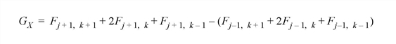
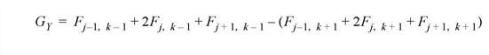
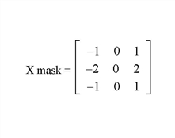
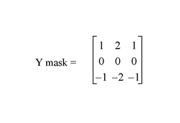

The SOBEL function returns an approximation to the Sobel edge enhancement operator for images,


where (j, k) are the coordinates of each pixel Fjk in the Image. This is equivalent to a convolution using the masks,
|
 |
 |
All of the edge points in the result are set to zero.
Result = SOBEL(Image)
SOBEL returns a two-dimensional array of the same size as Image. If Image is of type byte or integer then the result is of integer type, otherwise the result is of the same type as Image.
Note: To avoid overflow for integer types, the computation is done using the next larger signed type and the result is transformed back to the correct type. Values larger than the maximum for that integer type are truncated. For example, for integers the function is computed using type long, and on output, values larger than 32767 are set equal to 32767.
The two-dimensional array containing the image to which edge enhancement is applied.
None.
If the variable myimage contains a two-dimensional image array, a Sobel sharpened version of myimage can be displayed with the command:
TVSCL, SOBEL(myimage)
|
Original |
Introduced |